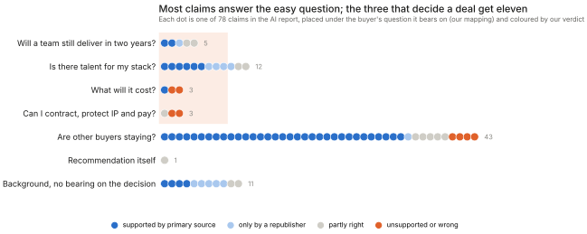
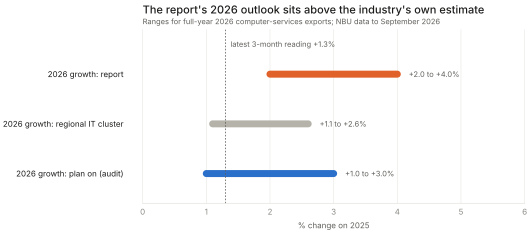
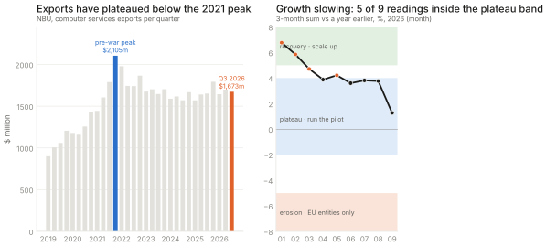
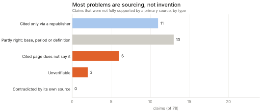

Trust the headline numbers. The pilot is defensible; the case for anything longer is not yet made. The report's headline export figures match central-bank data to within 0.24 percentage points. Its recommended pilot is a sensible first step. But the assumptions a multi-year deal would rest on — delivery continuity, vendor rates, contracting and payment rules — are not evidenced in the report.
| What we checked | What we found | What it changes for the buyer |
|---|---|---|
| Are the numbers right? | Headline totals and growth rates match the central bank; 46 claims confirmed by a primary source | Use the figures; cite the central bank, not republishers |
| Does the report answer the buyer's decision? | 43 of 78 claims on buyers staying; 11 on continuity, cost and contracting | The decisive evidence has to come from vendors and lawyers |
| Is its recommendation sound? | The conditional pilot is reasonable; the case for a long-term commitment is not made | Run the pilot with delivery logs, legal advice and rate cards as conditions |

The reader asked for a research report on Ukraine's IT exports. The decision behind it is whether to open a multi-year nearshore delivery partnership. That decision turns on five questions: will a team contracted today still deliver in two years; is there talent for my stack; what will it cost; can I contract, protect IP and pay without friction; are other buyers staying. Export totals bear on the last question only. We therefore judged the report on whether it answers those five, not on whether its numbers are tidy.
| Buyer's question | Evidence that would answer it | What the report offers |
|---|---|---|
| Will a team still deliver in two years? | Vendor delivery and outage logs; mobilisation-reservation status | General statements on wartime risk; no vendor data |
| Is there talent for my stack? | Headcount by skill, seniority and employer type | Industry headcount and seniority; no stack detail |
| What will it cost? | Vendor rate cards; wage trends by level | One median income figure; no rates |
| Can I contract, protect IP and pay? | Legal advice on Diia.City, IP assignment, NBU currency rules | An assertion, cited to a page that does not make it |
| Are other buyers staying? | Exports by year, quarter and country | Detailed and mostly correct |
Each number, ranking, causal statement and forecast became one claim. A claim is supported when its primary source says it (the central bank's balance-of-payments tables for exports, the originating organisation for what an organisation says); republisher only when only an industry body or news site carries it; partly right when the base, period or definition is off; unsupported or wrong when the cited page does not say it, nothing can verify it, or its own source contradicts it. 17 claims were re-checked against central-bank workbooks retrieved on 14 November 2026.
An AI research agent (Claude Sonnet 5.5, web search) wrote the report for this audit; it is published unedited with its search log and the exact prompt (input/prompt.md). The prompt named the decision — "I'm deciding whether to open a nearshore delivery partnership with Ukrainian IT firms" — so judging the report against it is fair.
Labels used throughout: Ddocumented in a source · Iour inference · Oopen or disputed.
| Headline figure | The report says | Central bank (30 Sep 2026 vintage) |
|---|---|---|
| 2022 exports | ~$7.3bn | $7,329m |
| 2023 change | −8.4% | -8.2% |
| 2024 change | −4.3% | -4.2% |
| 2025 exports, change | $6.66bn, +3.3% | $6,655m, +3.2% |
| Share of services exports, 2025 | 41.6% | 41.8% |
| Jan–Sep 2026 vs Jan–Sep 2025 | “flat to slightly up” | +3.2% |
DThe largest gap among these headline figures is 0.24 percentage points (share of services exports). Some country-level figures differ more — the 2024 change for Malta by 1.4 points, the US share by 0.3 — and are marked partly right in the register.
DOne framing needs context rather than correction. The report says 2025 sits about 9% below the 2022 peak; on annual totals that is right (−9.2%). Quarterly, the peak was the fourth quarter of 2021: Q4 2025 was 14.8% below it, and Q3 2026 was 6.5% below Q3 2021.

IThe report's outlook (+2% to +4% for 2026) reaches higher than the regional IT cluster's November estimate (+1.1% to +2.6%); the two overlap only between +2.0% and +2.6%, and the latest three-month reading is +1.3%. A buyer should plan on roughly +1% to +3%. The report also reads Europe as strengthening, citing an article its own search log shows it never opened; nine-month data show Germany, the UK, Malta and Switzerland down, with the US carrying the growth.

D5 of the 9 three-month readings of 2026 sit inside the plateau band. January (+6.8%) and February (+5.9%) were in the recovery zone, March (+4.7%) and May (+4.2%) slightly above the band; growth then slowed to +1.3% in September, the weakest reading of the year.
IBy the scenario rules on page 7, the recovery signal fired in February and has not been cancelled; one more reading under +2% cancels it. We read the year as decelerating growth, not as a recovery: a supply base big enough to buy from, not strong enough to justify a long lock-in on trend alone. That is why the report's numbers are fine while its long-term case is not — trend alone does not answer whether a specific vendor will deliver through a winter of outages or a change in mobilisation rules.
The same data can be read as a supply base in managed retreat: exports still below the pre-war peak after four years, the largest buyer purchasing less than in 2022, most new offices opening abroad, the sole-proprietor layer down about a quarter, few juniors entering. On that reading a buyer should contract Ukrainian talent only through EU entities.
| Would undermine the report's reading (monthly check) | Would undermine the opposite reading |
|---|---|
| Two consecutive three-month readings below −5% | Three-month readings at or above +3% through March 2027 |
| In-Ukraine IT headcount below ~235,000 in the December survey | Headcount at or above 245,000 for a third year |
| IT reservation quota cut below 50% | Reservation rules unchanged for six months |
| Shortlisted vendors cannot show delivery logs for the last two winters | Shortlisted vendors document under 1% lost delivery days |

| Failure | Example | Caught by an automated citation check? |
|---|---|---|
| Republisher instead of primary source | IT turnover fell 5.3% in 2024 — the figure appears only in a news write-up, not in the cluster's own summary [C17] | No: the link works and the number is there |
| Wrong base, period or definition | Malta's 2024 change −12.9% where the revised base gives −11.5% [C38] | Only if the checker recomputes |
| Source ambiguity repeated | "23% of the 27% opened offices abroad" — the source's own wording, but its 23% abroad and 4% in Ukraine add up (23 + 4 = 27), so 23% is a share of all companies [C52] | Only if the checker does the arithmetic |
| Cited page does not say it | "Diia.City eases contracting, IP protection and payments" cited to a page that does not say so [C75] | Yes at claim level; no at link level |
| Answering the easy question | 43 claims on buyers staying; 11 on continuity, cost and contracting (chart on page 1) | Never: every claim can be true |
| Missing what decides the case | No vendor rates, mobilisation-reservation rules or currency-control analysis | Never: there is nothing to check |
IThe last two rows are the expensive ones. No citation checker finds them; they are found only by starting from the buyer's decision and asking what evidence it needs.
| The report says | After the audit |
|---|---|
| 2025 is roughly 9% below the 2022 peak [C08] | Right on annual totals. Add: Q4 2025 was 14.8% below Q4 2021 |
| 23% of the firms that opened new locations went abroad [C52] | 23% of all surveyed firms opened offices abroad and 4% in Ukraine — most expansion went abroad |
| Diia.City had 3,893 residents [C48] | Outdated: use the current resident count from the Diia.City registry |
| 2026 will be $6.8–6.9bn, 2–4% above 2025 [C67] | Plan on +1–3%; the regional IT cluster estimates $6.73–6.83bn |
| The European direction is strengthening [C55] | Not supported: Germany, the UK, Malta and Switzerland are down through September |
| Diia.City and EU alignment ease contracting, IP and payments [C75] | Not shown. Obtain written legal advice under current NBU currency rules |
| Attacks and blackouts affect operations; firms manage them [C63] | Plausible but unevidenced for vendors: ask for delivery logs for the last two winters |
| A partnership is viable with a pilot and continuity clauses [C78] | Pilot: agreed. Make delivery logs, legal advice and rate cards conditions of the pilot |
| Scenario | Entry signal | Cancellation |
|---|---|---|
| Plateau — run the pilot | Latest three-month sum between −2% and +4% on a year earlier; reservation rules unchanged | Two consecutive readings below −5%, or the reservation quota is cut |
| Erosion — EU-entity delivery only | Two consecutive readings below −5% | Two consecutive readings back above 0% |
| Recovery — scale beyond the pilot | Two consecutive readings at or above +5% | Two consecutive readings under +2% |
Where we are now: by these rules the recovery signal fired in February 2026 and has not been cancelled; one more three-month reading under +2% cancels it.
One clock: each month, compare the latest three-month sum with the same months a year earlier (central-bank data arrive 25–30 days after month end). Between +4% and +5%, or between −2% and −5%, stay in the current scenario and watch. These are decision rules of thumb, not calibrated thresholds.
| Study | Finding |
|---|---|
| Tow Center, Columbia (2025): eight AI search tools | Wrong on more than 60% of citation queries, and more likely to answer wrongly than to admit a limit |
| DeepTRACE (ICLR 2026): deep-research agents | Citation accuracy of 40–80%, with large shares of statements unsupported by the agents' own sources |
| Rao, Wong & Callison-Burch (2026): 200,000+ citation links | 3–13% likely never existed; deep-research agents cite more and fabricate more |
| Deloitte Australia (2025): A$440,000 government report | Fabricated references and a misquoted judge; partial refund; recommendations left unchanged |
Their methods differ from ours, so they are context, not a benchmark. Among the links we checked, no fabricated source was detected — which is what makes a report like this risky: spot-checks of its numbers pass, and the gap sits in the judgement.
Every number, ranking, causal statement and forecast in the report became one claim, checked against its primary source where one exists. Full register for all 78 claims: claims.csv; question mapping: data/derived/claim_question_map.csv; central-bank workbooks with SHA-256 checksums: data/raw/. Every data-derived number in this report is generated from those files by code/build.py. Limits: some central-bank pages refuse automated access, so later checks may need the stored snapshots. The generating prompt is published in input/prompt.md.
| Framework | Mechanism and test | Holds only if | What we see |
|---|---|---|---|
| Akerlof (1970): the market for lemons | When buyers cannot observe quality, good and bad goods trade at one price. Test: does the report give verifiable signals? | Quality is hard to observe before use | 14% of claims rest only on republishers; an audit supplies the missing signal |
| Kahneman & Frederick (2002): attribute substitution | A hard question is answered with an easier one. Test: does the report answer the decision or the question the data make easy? | An analogy for the output, not a claim about a model's cognition | 55% of claims on buyers staying; 11 on the decisive questions |
| Kahneman (2011): what you see is all there is | Confidence follows the coherence of what is shown. Test: are decisive gaps flagged? | Applies to the reader as much as the writer | Vendor rates, reservation rules and currency controls are not analysed |
| Parasuraman & Manzey (2010): automation bias | People over-rely on automated output once it looks right. Test: would correct numbers raise trust in unsupported advice? | A hypothesis about readers, not measured here | Numbers check out while the decisive assumptions do not |
| Goodhart (1975); Strathern (1997): measures as targets | Goodhart's law, in Strathern's phrasing: when a measure becomes a target it ceases to be a good measure. Test: are citations present for form rather than support? | Applies if citation count is rewarded | 6 citations do not support their claim; one source was cited without being opened [C75, C55] |
Frameworks suggest tests; none is evidence that its mechanism operates here. References in theory_sources.md.
| ID | Question | Claim in the report | Verdict |
|---|---|---|---|
| C48 | Contracting | Diia.City had 3,893 residents by 2026 | Partly right |
| C75 | Contracting | Diia.City and EU alignment ease contracting, IP protection and payment flows | Cited page does not say it |
| C77 | Contracting | Poland and Estonia have grown as destinations, so use them for delivery | Cited page does not say it |
| C49 | Cost | Median technical income ~$2,700/month (+4.2%); 82.9% report higher expenses | Supported |
| C50 | Cost | Rates well below US/Western Europe but no longer cheap | Unverifiable |
| C64 | Cost | Rising costs versus flat export revenue squeeze margins | Cited page does not say it |
| C52 | Continuity | 27% of firms opened new locations in 2025, 23% of them abroad | Partly right |
| C60 | Continuity | 75% of companies have mobilised employees; 35% employ veterans | Supported |
| C61 | Continuity | Firms support them with job guarantees or salary compensation | Supported |
| C62 | Continuity | One in five considers emigrating; 8% of CEOs closing, 8% opening | Republisher only |
| C63 | Continuity | Attacks, blackouts and cyber threats continue to affect operations | Partly right |